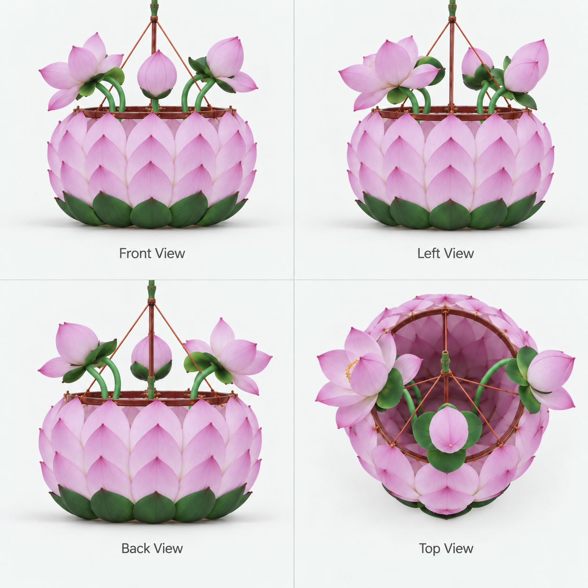

竹声、纸声、水声，伴你慢慢做灯。
赵徽柔 · 漫夜星入坊后循环播放，与制作音效独立。
走进灯彩工坊，从弯一根竹篾开始。亲手扎架、裱糊、染纸、压纹定形，把三十六片花瓣叠成属于你的秦淮荷花灯。

原图来自你提供的工艺资料包。流程按本次提供的八阶段说明补齐：扎框、裱糊、染纸、压模、定形、贴瓣、装饰、装灯。本版采用六层 36 瓣、上四下二六花头、两只莲蓬和两张荷叶，不是所有传统荷花灯的统一规格；花瓣制作后先捏边，再用铜丝固定；图中原花头配置仍作为造型参考。先压纹后定形是本版顺序，实际工序以传承人示范为准。尺寸、压模和 LED 为数字原型表现，纸张软体、手指关节及真实干燥时间未做物理仿真。
“前往当前工位”会移动至相应工作台，方便快速体验完整工序。阴干等待已缩短；这不是传统工艺精确用时或安全操作指南。
三圈为骨，三十六瓣成花。你亲手完成了这盏秦淮荷花灯。
当前制灯进度将清空，恢复为竹篾和未染纸料。其他秦淮项目不受影响。
铺纸，备篾，迎你入坊。